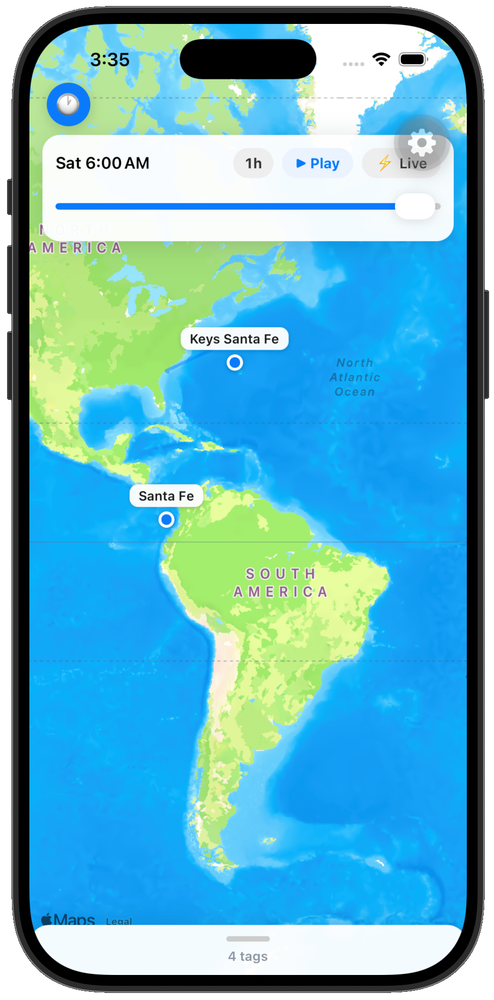
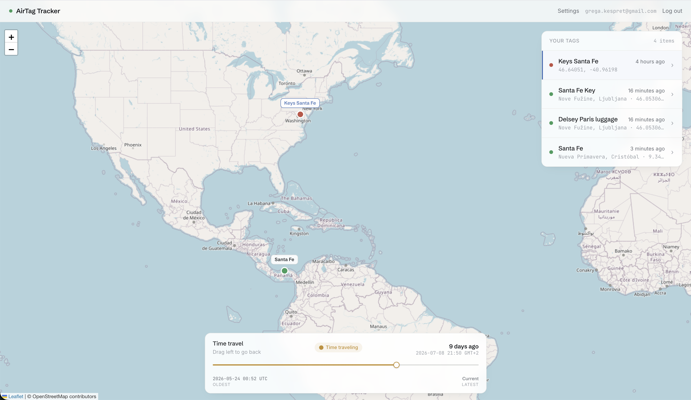

A native iOS app that turns Apple's single stale pin into a scrubable timeline — watch every AirTag move back through its own history.
Two things I really didn't want to lose in the shuffle: my car and my car keys. So I dropped an AirTag in each and shipped the car across an ocean.
On a transport ship, then a truck, then a lot — days at a time in someone else's hands.
Small, easy to misplace, and — plot twist — travelling separately.
The car crossed timezones. To catch the moment it moved, I'd have to open Find My, remember which tag, squint at one pin — right then. Miss the window and the pin just quietly overwrites itself.
Glanceable. Open the app, every tag and how long it's been parked there is right there — no digging.
Dwell time, not just place. “6 days at the port” is the fact I actually wanted.
History has my back. Asleep when it moved? The timeline caught it anyway.
Two AirTags that left together, drifting apart on a map at 2 a.m. A single Find My pin can't tell you that story. A timeline can.

Native Apple Maps — no API key, no web view. Pins are colour-coded by freshness; tap one for last-seen detail. It's a read-only client over the backend's JSON API, so the app never touches your Apple ID.
Scrub the time-travel control and every pin jumps to where it was at that instant, drawing the trail it took to get there. Tap ⚡ Live to snap back to the present.
buildTimeline · positionsAt · trailFor — the interpolation logic is pure functions with Jest tests. The map screen just renders what they return.
The identical history engine runs at airtaghistory.com: a full-screen map, your tag list with named places, and the same time-travel slider — drag left to go back through nine days of movement.
One account, every surface. The phone and the web read the same live data.
Reverse-geocoded places. “Nueva Primavera, Cristóbal” — not raw coordinates.

Find My shows one pin. AirTag History remembers the whole journey — on your phone, on the web, in a PDF you can hand to a claims adjuster.